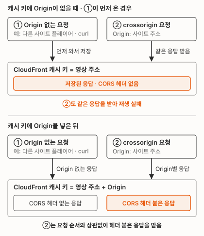

개발 서버에서 며칠 전 테스트 때 재생되던 강의 영상이 플레이어에서 재생되지 않았어요. <video> 요소에 남은 오류는 MEDIA_ELEMENT_ERROR: Format error(코드 4)였어요. 같은 영상을 curl로 범위 요청(파일의 일부 구간만 받는 요청)하면 CDN(CloudFront)은 206(범위 요청에 대한 정상 응답)으로 잘 내려 줬어요. CDN은 정상으로 응답했는데 브라우저에서만 재생되지 않는 이유를 찾아야 했어요.
이 플레이어는 <video crossorigin="anonymous">로 영상을 받아요. 이렇게 받으면 브라우저가 CORS(다른 사이트의 자원을 가져가도 되는지 서버가 응답 헤더로 알리는 규칙)를 따져요.
- 요청: 브라우저가 요청에
Origin헤더(요청을 보낸 사이트 주소)를 붙여요. - 응답: 그 사이트를 허용한다는 CORS 헤더(
Access-Control-Allow-Origin)가 없으면 브라우저가 응답을 버려요.
CloudFront가 두 요청을 같은 요청으로 볼지 정하는 기준(캐시 키)에 Origin이 없어서, Origin 없는 요청이 먼저 오면 CORS 헤더 없는 응답이 그 영상의 캐시에 저장됐어요. crossorigin 플레이어가 그 응답을 받으면 재생에 실패했고, 저장된 응답은 기본 유지 시간(하루) 동안 남을 수 있어요. 응답에 CORS 헤더를 덧붙이는 정책을 붙이고 시험한 영상 하나는 Chrome에서 여전히 재생되지 않아 되돌렸고, 캐시 키에 Origin을 넣어 고쳤어요.
crossorigin을 빼면 열리는 영상
플레이어가 <video>에 붙이는 속성 가운데 crossorigin 하나가 재생을 막고 있었어요. 의심한 것을 차례로 지운 과정은 이래요.
- 배포 변경: 마지막으로 재생을 확인한 뒤 플레이어 코드와 개발 서버 배포는 바뀌지 않았어요.
- 영상 형식: 같은 주소를
crossorigin없는<video>로 열면 메타데이터를 읽고 길이까지 나왔어요. 코덱 문제는 아니었어요. <video>속성: 플레이어가 붙이는 속성을 하나씩 뺀<video>를 만들어 열어 봤어요.crossorigin을 뺀 경우만 메타데이터를 읽고 열렸어요.
응답이 버려지면 <video>에는 Format error가 남고, 콘솔에는 CORS 헤더가 없다는 오류가 따로 찍혀요. 이 플레이어의 영상 화면 캡처 기능은 CORS 응답이 있어야 동작해요. 다른 사이트의 영상을 캔버스에 그린 뒤 이미지로 꺼내려면 CORS 응답이 필요해서예요.
먼저 온 요청이 정하는 캐시
CDN에 Origin을 붙여 요청해도 캐시에서 CORS 헤더 없는 응답이 나왔어요. curl로 요청 순서를 바꿔 보니 먼저 온 요청이 그 뒤 요청들의 응답을 정했어요.
| 먼저 보낸 요청 | 이어서 보낸 요청 | 이어서 보낸 요청의 결과 |
|---|---|---|
Origin 없이 | Origin 붙여 | 캐시에 저장된 응답, CORS 헤더 없음 |
Origin 붙여 | Origin 없이 | 캐시에 저장된 응답, access-control-allow-origin: * |
이 영상의 캐시를 처음에 무엇이 저장했는지는 확인하지 못했어요. 브라우저가 받던 응답은 제가 조사를 시작하기 전에 저장된 것이었어요. 같은 상태는 curl로 다시 만들 수 있었고, 표의 첫 줄이 제가 보낸 Origin 없는 curl로 만든 상태예요. 조사하려고 보낸 curl도 캐시에 응답을 저장해요.
캐시 키는 CDN이 두 요청을 같은 요청으로 볼지 가르는 기준이에요. 이 배포의 설정은 이랬어요.
- 캐시 정책
Managed-CachingOptimized: 캐시 키를 정해요.Origin같은 요청 헤더는 캐시 키에 넣지 않아요. - 원본 요청 정책
Managed-CORS-S3Origin: 원본(CDN이 영상을 가져오는 S3)에 넘길 헤더를 정해요.Origin은 S3까지 넘어가요. - S3 버킷의 CORS 규칙: 모든 사이트를 허용해요. S3는
Origin이 있는 요청에만 CORS 헤더를 붙여요.
그래서 Origin은 S3까지 가서 응답을 바꾸는데, 캐시 키에는 없어서 Origin이 다른 요청도 같은 저장본을 받아요. 먼저 온 요청이 받은 응답이 뒤에 온 요청에게도 나가요.

그림의 아래쪽이 고친 뒤 모습이에요. 캐시 키에 Origin이 들어가면 두 요청의 응답이 따로 저장돼요. 이 영상 파일에는 Cache-Control 헤더가 없어서, 저장된 응답은 캐시 정책의 기본 유지 시간(DefaultTTL 86400초, 하루) 동안 남을 수 있어요.
Origin 없는 요청은 여러 곳에서 와요.
crossorigin없는<video>: 같은 CDN을 쓰는 다른 사이트의 플레이어 중에 이렇게 받는 것이 있었어요.- 서버 작업: 영상에서 음성과 화면을 뽑는 ffmpeg도
Origin을 보내지 않았어요. ffmpeg 요청에는Origin헤더를 붙여(-headers "Origin: …\r\n") CORS 헤더가 붙은 응답이 캐시에 남게 했어요. - 그 밖의 요청: 직접 링크, 크롤러, 점검용 curl이에요.
Chrome에서 고쳐지지 않은 응답 헤더 정책
캐시 키를 바꾸기 전에 관리형 응답 헤더 정책 Managed-SimpleCORS를 먼저 붙여 봤어요. 응답 헤더 정책은 CloudFront가 응답을 내보낼 때 헤더를 덧붙이는 설정이에요. AWS 문서에 따르면 이 정책은 단순 CORS 요청(사전 확인 요청 없이 바로 보내는 CORS 요청)의 응답에 Access-Control-Allow-Origin: *를 붙이고, S3 응답에 이 헤더가 이미 있으면 S3 것을 써요. 캐시에 CORS 헤더 없는 응답이 저장돼 있어도 내보낼 때 헤더가 붙을 거라고 봤어요.
- 정책을 이 CDN 배포에 붙이고 그 영상의 캐시를 무효화(CDN에 저장된 응답을 지우는 작업)했어요.
Origin을 붙인 curl에는 헤더가 붙었지만, 실제 Chrome에서는 여전히 재생되지 않았어요.- Chrome이 영상 요청에 실제로 붙인 헤더를 개발자 도구 프로토콜(CDP)로 받아 curl 요청에 하나씩 더해 봤어요.
Priority헤더(요청의 우선순위를 서버에 알리는 HTTP 헤더)가 있을 때만 CORS 헤더가 빠졌어요.
Chrome은 영상 요청에 priority: i를 붙여 보내요. 아래는 정책을 붙인 상태에서 Origin과 Range(범위 요청 헤더)를 붙인 curl을 Priority 값만 바꿔 두 번씩 보낸 결과예요. Priority를 붙인 6줄에는 access-control-allow-origin이 없고, 붙이지 않은 마지막 2줄에만 있어요.
priority=[i] #1: HTTP/2 206
priority=[i] #2: HTTP/2 206
priority=[u=1, i] #1: HTTP/2 206
priority=[u=1, i] #2: HTTP/2 206
priority=[u=3] #1: HTTP/2 206
priority=[u=3] #2: HTTP/2 206
priority=[none] #1: HTTP/2 206 access-control-allow-origin: *
priority=[none] #2: HTTP/2 206 access-control-allow-origin: *
이 결과를 읽을 때 알아 둘 것이 셋 있어요.
- 무효화 경로: 이 영상의 파일 이름에는 괄호가 들어 있었어요. 무효화는 괄호를
%28·%29로 바꾼 경로로 했는데, Chrome과 위 curl은 괄호를 그대로 둔 경로로 요청했어요. 그쪽 캐시는 지워지지 않았고, 응답이 캐시에 머문 시간(age)이 무효화 전부터 이어졌어요. - 본 범위: 그래서 위 결과는 CORS 헤더 없는 응답이 캐시에 남은 영상 하나에서 본 거예요. 응답 헤더 정책은 내보낼 때 헤더를 붙이는 설정이라, 이 상태에서도 헤더가 붙을 거라고 본 거였어요.
- 시험하지 않은 것: 캐시가 비었거나 CORS 응답이 저장된 영상에서는 정책을 붙인 채
Priority를 시험하지 않았어요. CloudFront가 이 요청에 왜 헤더를 붙이지 않는지도 찾지 못했어요.
정책을 붙이고 시험한 영상은 Chrome에서 재생되지 않았고 이 배포는 운영 영상도 내보내서, 바로 원래 설정으로 되돌렸어요. 정책은 8분쯤 붙어 있었고, 그동안 다른 영상에 어떤 영향을 줬는지는 확인하지 못했어요.
되돌린 뒤 두 경로 형태를 모두 무효화하고 Origin을 붙인 요청을 먼저 보냈어요. 그러자 Chrome의 crossorigin <video>로 열렸고, 실제 플레이어에서도 재생됐어요. 원래 설정에서도 CORS 응답이 저장된 다른 영상 하나에서는 Priority가 있어도 헤더가 붙었어요. 다만 Origin 없는 요청이 다시 먼저 오면 같은 상태로 돌아가요.
캐시 키에 Origin 넣기
ffmpeg는 고쳤지만 다른 사이트의 플레이어, 직접 링크, 크롤러는 그대로라서 캐시 키를 바꿨어요. 캐시 키에 Origin을 넣으면 Origin이 있는 요청과 없는 요청의 응답이 따로 저장돼요. 관리형 정책 Managed-CachingOptimized는 헤더 설정(HeaderBehavior)이 none이에요. 유지 시간과 압축 설정은 그대로 두고 Origin만 더한 캐시 정책을 새로 만들었어요(aws cloudfront create-cache-policy).
{
…
"DefaultTTL": 86400,
"MaxTTL": 31536000,
"MinTTL": 1,
"ParametersInCacheKeyAndForwardedToOrigin": {
"EnableAcceptEncodingGzip": true,
"EnableAcceptEncodingBrotli": true,
"HeadersConfig": {"HeaderBehavior": "whitelist", "Headers": {"Quantity": 1, "Items": ["Origin"]}},
"CookiesConfig": {"CookieBehavior": "none"},
"QueryStringsConfig": {"QueryStringBehavior": "none"}
}
}이 CDN 배포는 개발과 운영 영상을 함께 내보내서 개발 환경에서 먼저 시험할 수 없었어요. 그래서 이렇게 적용했어요.
- 기존 배포 설정을 복사하고 캐시 정책만 바꾼 시험 배포를 만들었어요. 영상을 가져오는 S3 버킷이 같아서 같은 영상으로 시험할 수 있어요.
- 실제 플레이어로 보려고 개발 DB에서 영상 하나의 주소만 잠시 시험 배포로 바꿨다가 되돌렸어요.
- 시험을 통과한 뒤 기존 배포의 캐시 동작(경로별 규칙) 세 개, 기본·
/*.png·/*.gif에 새 캐시 정책을 붙였어요. 되돌릴 때는 캐시 정책을 원래 관리형 정책으로 바꾸면 돼요.
시험 배포와 기존 배포에서 확인한 결과는 이래요.
- 요청 순서: 캐시가 빈 영상에
Origin없는 요청을 두 번 보낸 뒤Origin을 붙여 요청했어요. 응답에access-control-allow-origin: *와vary: Origin(응답이Origin값에 따라 달라진다는 표시)이 붙었어요. 원래 설정에서는 같은 주소로 보낸 세 번째 요청이Hit였는데, 바꾼 뒤에는Origin요청이 두 번 더Miss가 나고 나서야Hit였어요. - Chrome의
Priority: 같은 요청에Priority: u=1, i를 더해도 헤더가 붙었어요. 이 요청은 캐시에 저장된 응답으로 나갔어요. - 브라우저: Chrome 157과 WebKit 26에서
crossorigin<video>로 영상을 열고 1분 지점으로 이동하는 것까지 됐어요. - 실제 플레이어: 시험 배포 주소로 바꾼 영상에서 재생, 진행바 이동, 화면 캡처가 됐어요.
- 못 본 것: Firefox와 모바일 실기기에서는 확인하지 못했어요.
- 효과: 재생 실패가 줄었는지는 아직 숫자로 재지 못했어요. 재생이 실패할 때도 CDN은 206을 내보내서 CloudFront 오류율에는 잡히지 않아요. 전후를 비교하려면 화면 쪽 영상 오류 로그나 “영상이 안 나와요” 문의 건수를 따로 모아야 해요.
남는 비용과 점검 순서
Origin 값마다 응답이 따로 저장되니 S3까지 가는 요청이 늘어요.
- 요금: S3에서 CloudFront로 보내는 전송은 요금이 없어서, 늘어나는 건 S3 GET 요청 요금(서울 리전 1만 건당 0.0035달러)이에요. 하루 요청 10만 건이 전부 S3까지 가도 10만 건은 1만 건의 10배라 0.0035 × 10 = 0.035달러예요. 이 배포의 하루 요청은 조사한 일주일 내내 이보다 적었어요.
- 요청이 느는 경우: 처음 보는
Origin값으로 온 요청은 저장된 응답이 없어 S3까지 가요. 요청마다 다른Origin값을 붙여 보내면 그만큼 S3 요청이 늘어요.
crossorigin으로 받는 영상·이미지를 CloudFront로 내보내고 S3 버킷에 CORS 규칙이 있다면, 이 순서로 확인하면 돼요.
- 캐시 정책의
HeadersConfig에Origin이 있는지 봐요. - 영상 하나의 캐시를 무효화해요. 경로는 브라우저가 요청하는 형태 그대로 넣어야 해요. 괄호처럼 인코딩하기도 하고 그대로 두기도 하는 문자가 있으면 두 형태를 모두 무효화해요.
Origin없이 같은 영상을 응답 헤더x-cache가Hit(캐시 적중)로 나올 때까지 되풀이해 요청해요. 범위 요청은Miss(받은 CDN 서버에 저장본이 없었음)가 두세 번 이어지기도 해요.- 이어서
Origin을 붙여 요청해요. 이 응답이Hit인데access-control-allow-origin이 없으면 캐시 키에Origin이 빠진 거예요. 빠져 있으면 캐시 정책에Origin을 넣어요. 이 글의 시험에서는 넣은 뒤에만vary: Origin이 함께 붙었어요. - 응답 헤더 정책을 쓴다면 4번 요청에
Priority: i를 더해서도 봐요.